Data Storytelling - Operationalized for your Data Story
Chapter 1 - 5 from Dykes (2019)
Dykes (2019)

Dykes, B. (2019). Effective Data Storytelling: How to Drive Change with Data, Narrative and Visuals. John Wiley & Sons.
Chapter 1
Introduction to Driving Change through Insight
Chapter 2
Why Tell Stories with Data?
Chapter 3
The Psychology of Data Storytelling
Chapter 4
The Anatomy of a Data Story
Chapter 5
Data, The Foundation of Your Data Story
Chapter 1: Driving Change through Insight
Section Headlines of Chapter 1
- Why Change Is Important
- Everyone Becomes an Analyst
- Data Literacy Is Essential in Today’s Data Economy
- What Is an Insight?
- Effective Communication Turns Insights into Actions
- Data-driven Change Isn’t Easy
- Strive to Communicate, Not Just Inform
- Telling the Story of Your Data
Data Literacy
Definition: The ability to understand and communicate data.
- Data has no value for data illiterate people!
- People can be data literate with knowing much statistics or even programming!
- As data scientists we are expected to
- know some statistics and programming
- communicate data insights on a high level to data literate people
- being able to communicate data insights to less data illiterate people
The challenges for your project:
- Bring you main insights across to an audience with low and intermediate data literacy!
What is an insight?
Etymology: “inner sight” or “ sight with the ‘eyes’ of the mind”
A Definition: an unexpected shift in the way we understand things
However: Do not feel pressured! The insight need not be ground breaking.
Activity
What can be main insights of your project presentation?
- List at least 3 potential main insights, better more
(It’s okay if the insights are uncertain for now because you do not know yet) - Discuss for each project in your group and select a tentative main insight (not binding)
Role of other project members:- Ask questions
- What is important to know as an outsider?
- What is most interesting as main insight?
Which perspective of communication shall the project have?
You can communicate to the audience from the position of an
Insider
or
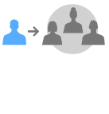 Outsider
What is the story telling position in your project?
Path to value
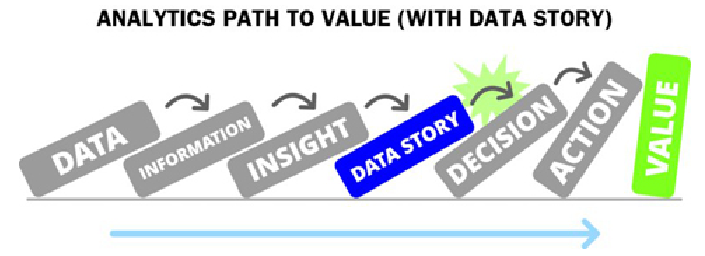Think about a potential role your project report could have (for your audience)
Chapter 2: Why Tell Stories with Data?
3 Essential Elements of Data Stories
Data, Visuals, Narrative
The three essential elements of data stories.
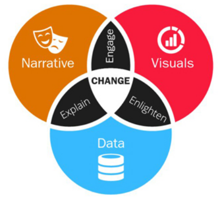
- Explain. Narrative coupled with data.
- What’s happening in the data?
- What is the context?
- Guide through the data structure!
- Why is a particular insight important?
- Enlighten. Visuals applied to data.
- Some insights are hard with numbers only.
- Show patterns and outliers otherwise hidden.
- Engage. Narrative and visuals merged together.
- Engage (or even entertain) an audience.
- Visuals capture interest, only a story holds attention.
Aristotle’s rhetoric
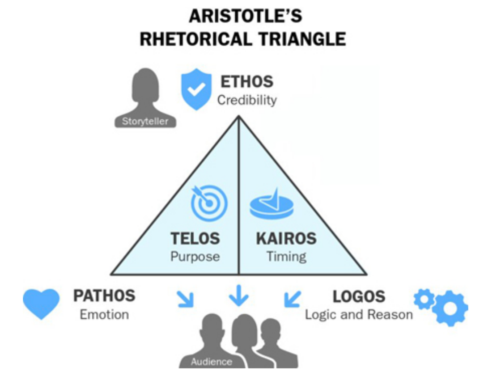
- Ethos an appeal to credibility
- Logos an appeal to logic or reason
- Pathos an appeal to emotion
- Telos an appeal to purpose
- Kairos an appeal to timeliness (opportune moment)
Aristotle’s rhetoric
Activity:
Check your potential story:
Can you address all these 5 rhetoric perspectives?
- Show credibility by not telling stories unrelated to data.
- What parts appeal to emotion, do you want to emphasize it, to make it relatable?
- Do you have logical reasoning for your main point?
- Can you make reference to timeliness.
- What is the main purpose of the story?
Talking Point
Some quotes:
- Sometimes reality is too complex. Stories give it form.
- Storytelling is the most powerful way to put ideas into the world today.
- Stories change people while statistics give them something to argue about.
Questions for discussion:
Is Storytelling just about persuasion like advertising?
Should we do this as Data Scientists?
Isn’t Data Science largely about fighting against wrong but compelling stories?
Chapter 3: The Psychology of Data Storytelling
Chapter 4: The Anatomy of a Data Story
Data Story Continuum
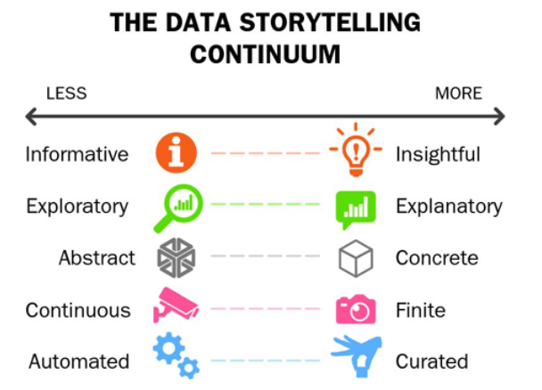Five contrasting attribute pairs.
Try to bring visuals and story point to have attributes from the right!
Storyframing before Storytelling
- Before you communicate insight, you must find one!
- Focus on key metrics and dimensions
Activity: Note potential key metrics in your data to frame your story.
Anatomy of a Data Story
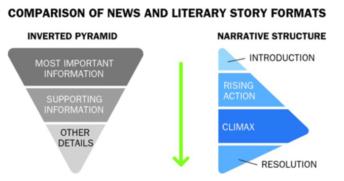Different structure for two parts of your report
- Narrative structure for your slide deck and presentation
- Inverted pyramid structure for the written report
Six essential elements of data stories
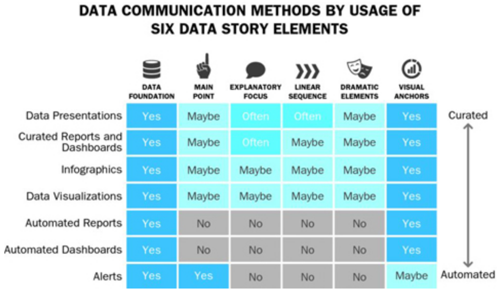- Your project slide deck and presentation matches a Data Presentation
- Your project report matches a Curated Report (and Dashboard)
Differences in Communication
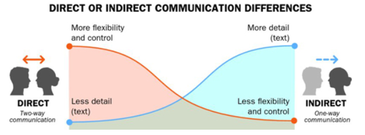- Your project slide deck and presentation is direct communication
- Your project report is indirect communication
Chapter 5: Data, The Foundation of Your Data Story
From Exploration to Explanation
Your new challenge: Come from explorattion to explanation!
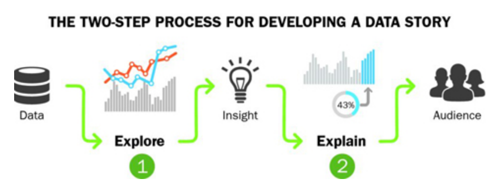Once a meaningful insight is uncovered, explanatory data visualization shall be produced to tell the the story.
Exploratory vs. Explanatory
| Exploratory | Explanatory | |
|---|---|---|
| Goal | Understand | Communicate |
| Audience | You | Other people |
| Data familiarity | Very familiar (you) | Less familiar (others) |
| Visualization focus | Flexibility and speed | Simplicity, clarity, and cohesion |
| Narrative | Unknown | Known |
| Outcome | Insight | Action |
Data-Cut Trap
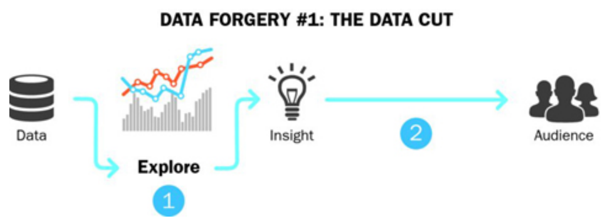Data-Cameo Trap
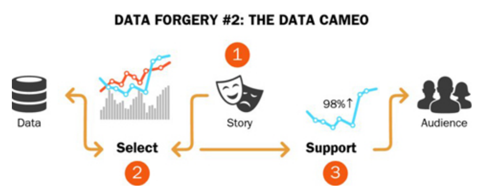Data-Decoration Trap
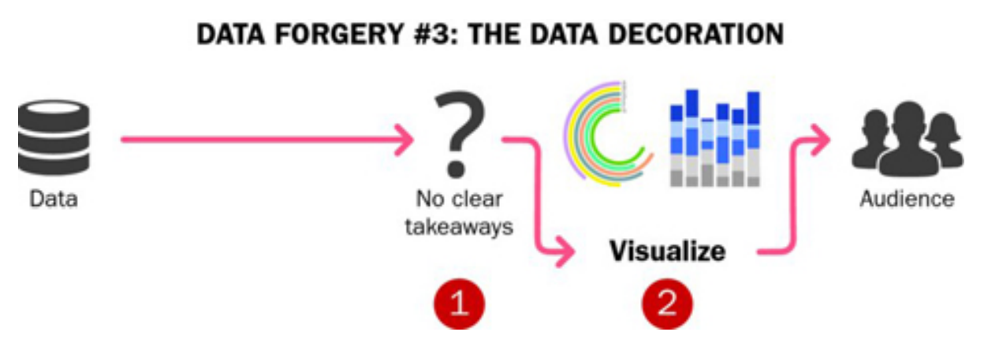